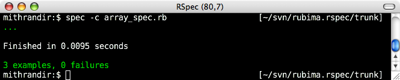
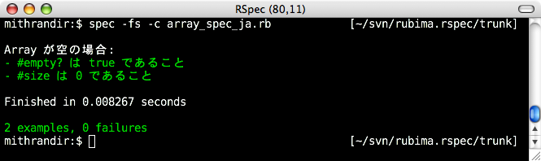
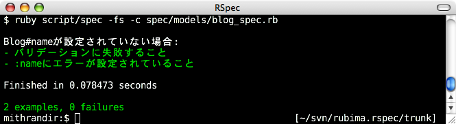
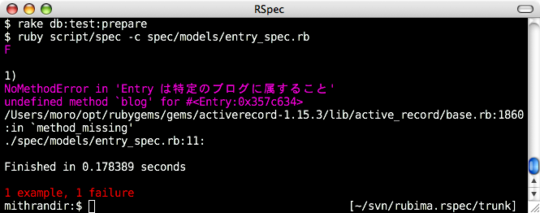
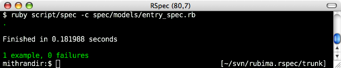
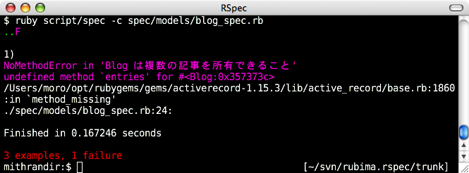
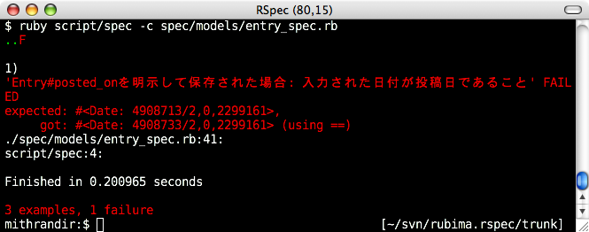

スはスペックのス 【第 1 回】 RSpec の概要と、RSpec on Rails (モデル編)
書いた人: かくたに、もろはし
- この連載について
- RSpec とは何か
- なぜ、RSpec なのか
- RSpec の簡単な使い方
- スペックファイルの構造
- RSpec on Rails
- Rails プロジェクトの作成
- RSpec on Rails のインストール
- RSpec on Rails 用ファイルの生成
- RSpec on Rails のテスト用ディレクトリ構成
- 今回説明する RSpec on Rails の範囲と目的
- ブログアプリケーションのモデル
- Blog モデルの作成
- Entry モデルの作成
- ジェネレータで Entry モデルを生成する
- マイグレーションファイルを編集する
- データベースを移行する
- フィクスチャを編集する
- Entry と Blog の関連のスペックを定義する
- 「Entry は特定の Blog に属すること」をスペックとして定義する
- Entry に belongs_to を実装する
- 「Blog は複数の Entry を所有していること」をスペックとして定義する
- Blog に has_many を実装する
- 「Blog に Entry を追加できること」をスペックとして定義する
- change マッチャ
- blog_spec.rbを実行する
- 記事の投稿日に期待する振舞を定義する
- 続いて、投稿日を明示した場合に期待される振舞を追加します。次のような仕様でした。
- 次回予告
- 著者について
- バックナンバー
この連載について
この連載では Test::Unit を代替するフレームワークである RSpecの使い方や、その背後にある考え方を何回かに分けて連載形式でお届けします。 連載全体を通じて、以下のような内容を紹介したいと考えています。
- RSpec とは何か。RSpec の使い方、特に Rspec on Rails を使った Rails アプリ開発への適用
- テスト駆動開発の進め方と、テスト駆動開発的な設計アプローチ
- RSpec の仕組みと拡張の方法
FAQ:「RSpec って、要は Test::Unit でやっていることを別の書き方にしただけでは？」
ここで先回りして FAQ です。この FAQ への短い答えはイエスです。 しかし、その「書き方」が人の思考を変えてしまうことを、Rubyist の皆さんはよく知っている と思います。 この連載は、この FAQ への長い答えです。お楽しみいただければ幸いです。
なぜ私たちが記事を書いたか
「この RSpec には夢があるッ!!」――これは私たち(主にかくたに)が RSpec から受信したメッセージ (電波?) です。私たちにとって RSpec とは、Martin Fowler が RailsConf2007 で Ruby コミュニティに対して抱いた 感慨 をコードにする試みです。RSpec は「Ward ( Cunningham) 、Kent ( Beck) 、それから、キレイなコード、うまく整理されたオブジェクト指向設計、そして、テストしやすさについて提唱してきたすべての人たちの価値」を具現化しようとしています。
この連載を通じてこうした考え方をいくらかでも読者の皆さんに伝えられたらと思い、記事を書くことにしました。
対象読者
Ruby 標準添付のテスティングフレームワークである Test::Unit を多少は使った ことがあることを前提としています。
ただし、いわゆるテスト駆動開発やテストファーストといったプログラム技法 の経験は前提としていません。
対象とするバージョン
執筆時点での最新リリースバージョンを対象とします。つまり、今回は 1.0.8 です。
RSpec は 0.8.x 以前と 1.0.x との間で大幅な API の変更がありましたが、この連載 では新 API と旧 API との対応や旧 API からの移行については基本的に言及しません (アーリーアダプター諸君らの愛してくれた RSpec は死んだ!) 。
0.8.x から 1.0x 系への移行については、RSpec のプロジェクトのドキュメントの Upgrading from RSpec 0.8.x or earlier やid:moro の日記の記述を参考にしてください。
今回の説明範囲
連載の初回である今回は、次の 4 点を取り挙げたいと思います。
- RSpec とは何か
- RSpec の簡単な使い方
- スペックファイルの構造
- RSpec on Rails (途中まで)
RSpec on Rails については、今回だけでは説明しきれませんので、次回 以降も引き続き説明します。以下で順番に説明していきますが、「RSpec とは何か」 では RSpec の目的について少し詳しく説明します。RSpec の目的はもう知っている、という人は「RSpec の簡単な使い方」から読み進めてください。
RSpec とは何か
RSpec とは、公式サイトの説明によれば、__「プログラムの振舞 (behaviour)」を記述するためのドメイン特化言語 (DomainSpecific Language:DSL) を提供するフレームワーク」__です。
プログラムの振舞？ ドメイン特化言語？……順番に説明させてください。
プログラムの振舞 (behaviour)
「プログラムの振舞」とはプログラム全体あるいは様々なレベルでの部分 (モ ジュールやクラス、メソッド) に対して期待する振舞 (behaviour:ビヘイビア) の ことです――といっても何も特別なものではありません。
具体例で説明しましょう。例えば、ある Array インスタンスが空の場合に期待す る振舞は次のようなものです。
arr = []
arr.empty? #=> 振舞として true を返すことを期待する
arr.size #=> 振舞として 0 を返すことを期待するこれは Test::Unit を使って次のように書けます。
require 'test/unit'
class ArrayTest < Test::Unit::TestCase
def setup
@empty_array = []
end
def test_empty?
assert(@empty_array.empty?)
end
def test_size
assert_equal(0, @empty_array.size)
end
def teardown
@empty_array = nil
end
endつまり「プログラムの振舞」といっても何も難しいものではありません。「これまで Test::Unit で検証していたもの」と意味するところは同じです。
なお、このようなテストケースで teardown メソッドを利用することは稀ですが、 この後で説明する RSpec での記述と対比させるために、あえて記述しています。
ドメイン特化言語 (DSL)
ドメイン特化言語 (Domain Specific Language:DSL) とは、特定の問題領域 (ドメ イン) を記述するために設計された「言語」です。RSpec が特化しているドメイ ンは「開発対象のプログラムの振舞を記述する」という領域です。
RSpec はプログラムの振舞を記述する言語として、Ruby を拡張することを選びま した。このような、DSL を定義する言語と DSL を実行する言語 (ホスト言語) とが 同じである DSL の実装アプローチを「言語内 (internal) DSL」と呼びます。
ちなみに、DSL の言語とホスト言語とが異なるものを言語外 (external) DSL と呼 びます。言語外 DSL の例としては、Java でよく使わているビルドツールの Ant が 該当します。Ant は、DSL が XML であり、ホスト言語が Java である言語外 DSL と考 えられます。
話が抽象的になってきたので、具体的な RSpec の記述を例に DSL がどのようなも のかを紹介します。比較のために、先ほど紹介した Test::Unit による空の Array のテストケースを RSpec で記述すると、次のようになります。
describe Array, "when empty" do
before do
@empty_array = []
end
it "should be empty" do
@empty_array.should be_empty
end
it "should size 0" do
@empty_array.size.should == 0
end
after do
@empty_array = nil
end
end読み方については追々説明していきます。ここでは、RSpec が「Ruby を拡張した 言語内 DSL としてプログラムの振舞を記述する」ということの実際の雰囲気を感 じてください。
Test::Unit と RSpec とで最も大きく異なる点は、Test::Unit ではクラスやメソッ ドを定義するのに対し、RSpec ではブロック付きメソッド呼び出しや、カッコの 省略を活用して記述した Ruby スクリプトになっていることです。
ここで挙げた例では after メソッドを使っていますが、これは、Test::Unit の teardown メソッドに対応するものが RSpec にも用意されていることを示すためで す。特別に後片付けが必要ではないリソースの開放を、わざわざ after メソッド で記述する必要はありません。
なぜ、RSpec なのか
では、なぜ Test::Unit ではなく、RSpec を選ぶのでしょうか。冒頭の FAQ を再び。 「RSpec って、要は Test::Unit でやっていることを別の書き方にしただけでは？」 ――確かにその通りなのですが、その「書き方」が重要だというのが私たちの思いでした。
RSpec が「振舞定義用の DSL」を提供して、プログラマに Test::Unit とは異なる 書き方をさせているのは、ある考え方を私たちに伝えるためです。その考え方とは、 テスト駆動開発 (Test Driven Development:TDD) です。
テスト駆動開発 (TDD)
RSpec がツールを通して私たちに伝えようとしてるのは、特に、TDD の提唱者で ある Kent Beck が‘『テスト駆動開発入門』’で述べた次のような考え方です。
TDD の皮肉の 1 つは、TDD がテスト技法ではないこと (カニンガムの考案) である。TDD は分析手法および設計技法であり、実際には開発のすべてのアクティビティを構造化するための技法である。
TDD では、プログラム (プロダクトコード) を書くにあたって、まずテストコード を書きます。そして、テストの実行が失敗することを確認してから、テストコー ドをパスするようにプロダクトコードを書く、というプログラミングの進め方 です。
RSpec のプログラミングに対する考え方と、フレームワークとして支援するプロ グラミングの進め方は TDD そのものです。
TDD の進め方と原則
TDD の進め方はいたって簡単です。TDD は以下の 3 つのステップから構成されます。
- プロダクトコードを書く前にテストコードを書き、それが失敗することを確認する (レッド)
- テストに成功するようにプロダクトコードを書く (グリーン)
- プログラムの振る舞いを変えないように、プロダクトコードの重複などを整理する (リファクタリング)
- (最初に戻る)
「レッド」や「グリーン」といった表現は、いわゆる xUnit1 の実行結果表示バーの伝統的な色づかいに由来しています。RSpec でもレッド/ グリーンといった色使いの伝統が踏襲されています。
TDD に関連する技法には様々なものがありますが、TDD の原則は次の 3 つにまとめられます。
- テストに失敗しない限り、プロダクトコードを書いてはいけない。
- プロダクトコードはテストを通るように書く
- テストは少しずつ書き進めていく
この連載でも、RSpec on Rails を使った Rails アプリケーション開発の説明はこの 原則に従って進めていきます。
ソフトウェア設計とは何か？
いま、TDD についての説明で「設計」と言ったり「プログラミング」と言ったり しました。ここでこの連載での考え方を整理しておきます。私たちは、Jack Reeves の記事「ソフトウェア設計とは何か？ 」で提唱されている考え方を支持します。
ソフトウェア設計とは、ソフトウェアに期待される振る舞いを満たすようにプ ログラムを構成することです。ソフトウェア設計とは、具体的にはクラスやメ ソッド、モジュールを定義することであり、その成果物はソースコードです。 つまり、ソフトウェア設計とはプログラミングであり、プログラミングとはソ フトウェア設計なのです。
設計の成果物はソースコードである
なぜソフトウェア設計 (＝プログラミング) の成果物がソースコードなのか。そ れは、__設計の成果物は、それが正しく動作することを検証可能でなければならない__からです。 ソフトウェアにおいて、動作することを検証可能なものは (今のところ) ソースコードです。
ですから、厳密にいえば、ソースコード、すなわちソフトウェア設計とは次の 2 つの要素から構成されます。
- テストコード: プログラムがどのように振る舞うべきかを定義したもの
- プロダクトコード： テストコードで定義された振る舞いを実装したもの
RSpec では、TDD の文脈で開発を駆動する「テスト」をソフトウェア設計の要素 であると位置付けています。ツールとしてこの考え方を明確にするた めに、RSpec は Test::Unit とは異なる記法を採用し、Test::Unit とは異なる語彙を導入して います。
Test::Unit と RSpec の語彙の違い
RSpec は、TDD が「プロダクトコードの前に、まずテストを書く」ことを通じて伝えようとした考え方―― すなわち、__プロダクトコードを書く前に、まずプログラムの振る舞いを動作可能なサンプルとして書くこと__を 既存の xUnit フレームワークに比べて、より前面に押し出しています。
たとえば RSpec では、Test::Unit では「テストケース」と呼ばれているテストメソッドのことを「実行可能なサンプル (example)」と呼んでいます。「実行可能なサンプル」と毎回書くのは長いし読むのも疲れるので、この連載では 「example」と表記します。
他にも、RSpecは、Test::Unit で「テストクラス」と呼んでいる、テストケースの論理的なまとまりを「振舞 (behaviour)」と呼び、Test::Unit では「アサート (assert)」と呼んでいるコードの検証を「エクスペクテーション (expectation)」と呼びます。エクスペクテーションとは、実行可能なサンプルとしてプログラムの振舞に__期待すること__という意味です。
このように、TDD で使われている「テスト」にまつわる語彙を「動作可能なサン プルとしてプログラムの振舞を記述する」という観点から再定義し、 TDD のプログラミングの進め方が「テストというよりは設計である」ということを強 調する考え方を、__振舞駆動開発 (Behaviour Driven Development:BDD)__と呼ぶことも あります2。
しかし、現実には BDD はまだキャッチフレーズ以上の存在感は示すことができていません。 現在のところ、BDD という用語は、TDD 実践者の間でも広く受け入れられているとは言い難い状況です。
私たちも日常的に「振舞」や「ビヘイビア」と発音するのはまだるっこしいので、 今のところは「スペック」と呼んだり「テスト」と呼んだりと、ルーズに使っています。
この連載でも「テスト」や「テストコード」という書き方をする箇所が幾つもでてきます。 そのときに指しているものは、特に断りが無い限り RSpec で定義したプログラムの振る舞いのことだと考えてください。
統合テスティング環境としての RSpec
ここまでは、RSpec がツールとして表現しようとしてる考え方を中心に、なぜ Test::Unit ではなく Rspec なのか、ということを紹介しました。
RSpec は、背景にある考え方以外にも、実利的な観点から Test::Unit よりも RSpec のほうが好ましい点があるので紹介しておきます。それは、Test::Unit が 「テスティングフレームワーク」であるのに対して、Rspec が「統合テスティン グ環境」であることを目指しているという点です。
具体的にいえば、RSpec は、振舞定義用の DSL の提供に加えて、様々なテスト関 連ライブラリや周辺ツールを統合したり、標準サポートしたりといった試みを 積極的に続けています。以下にその代表的なものをリストにしてみました。
- RSpec 実行結果の色付け (レッドバー/ グリーンバー表示) の標準サポート
- モック や スタブ といったテスト技法の支援、関連ライブラリとの統合
- 保留 (pending) のサポート
- Rake や RCov、Heckle、AutoTest (ZenTest) といった周辺ツールとの統合
- Ruby on Rails のサポート
- 様々な形式による実行結果レポート (例:HTML 出力) 。
- TextMate との統合
- などなど
個々の具体的な項目については、連載を通じて紹介するものもあれば、しない ものもあります。既に気になって仕方のない皆さんは、それぞれの項目から RSpec 公 式サイトの該当ページへリンクを張っておきますので、リンク先を参照してく ださい。
こうした周辺ツールとの統合の背景には、RSpec を単なる Test::Unit の置き替え以上の存在にしようという狙いがあります。プログラマのテストの記述・実行環境を__全体として__充実させていく、という「統合テスティング環境」とでも呼べそうな視点は (現在の) Test::Unit には無いものです。
ここまでのまとめ
一旦ここまでをまとめておきます。
Rspec の狙いはプログラマにテストコードが設計であることを明確に意識させることと、プログラマがテストコードをスムースに記述し実行できるようになることです。
そのために、RSpec は振舞定義用の DSL を提供し、様々なテスト関連ライブラリや周辺ツールとの連携を積極的に行い、「統合テスティング環境」となることを目指しています。
さて、前置きが長くなってしまいました。そろそろ実際に RSpec をインストールして使ってみましょう。
RSpec の簡単な使い方
インストール
RSpec のリリースバージョンは RubyGems で提供されています。rubygems をまだイ ンストールしていない場合は RubyGems のマニュアル などを参考にしてインストールしておいてください。以下のコマンドで最新版の Rspec を gem パッケージとしてインストールできます。
$ gem install rspecRSpec が無事にインストールされて、実行できることを確認しましょう。
$ spec -v
RSpec-1.0.8 (r2338) - BDD for Ruby
http://rspec.rubyforge.org/うまくバージョン番号が表示されない場合は、インストールに失敗しているか、 $GEM_HOME/bin にパスが通っていないことが考えられます。
この spec コマンドが、RSpec の実行の基本コマンドです。
基本的な実行方法
では、RSpec を実行してみます。spec コマンドの引数として振舞を定義したスペックファイルを与えると RSpec を実行できます。
最初の例には、冒頭で紹介した組み込みクラス Array に対する振る舞いの定義を 利用しましょう。具体的な振舞の記述方法は、追々説明していきます。
まずは、実際に動かしてみて RSpec の雰囲気を掴んでください。
スペックファイルの用意
適当なディレクトリに array_spec.rb という名前のファイルを用意します。 RSpec によるテストコードのファイル名は (今のところ) 接尾辞を _spec とする のが一般的です。なお、この連載では RSpec で振舞を記述したファイルのことを スペックファイルと呼びます。
スペックファイルには、次のようにスペックを書きます。この連載では、スペッ クファイルの中身のことをスペックと呼びます。
array_spec.rb
describe Array, "when empty" do
before do
@empty_array = []
end
it "should be empty" do
@empty_array.should be_empty
end
it "should size 0" do
@empty_array.size.should == 0
end
after do
@empty_array = nil
end
endRSpec の実行
spec コマンドに、先ほど作成した array_spec.rb を引数として渡すことで RSpec を実行できます。
$ spec array_spec.rb
..
Finished in 0.047857 seconds
2 examples, 0 failuresTest::Unit とよく似た形式で実行結果が出力されました。Test::Unit と同様、 ドット (.) の数はテストに成功した example の数を示しています。example とは具 体的には it メソッドの呼び出しの数です。
上記の出力は、2 つの example が実行され、failure (失敗) が 0 であると報告して います。つまり、テストに成功したということです。
spec コマンドには様々な実行オプションが用意されています。 ここでは、日常的によく使うオプションを 2 つだけ紹介します。
- 実行結果に色づけする
- specdoc 形式フォーマットでの実行
以下で順番に説明していきます。他にもたくさんある spec コマンドの実行オプションの詳細は「$ spec –help」か サイトのドキュメント を参照してください。必要に応じて、この連載でも他のオプションを説明する予定です。
実行結果に色づけする
RSpec は、実行結果の色づけを標準でサポートしています。RSpec ならターミナルでのグリーンバーを表示させることができます。なんと素晴しい。そのためのオプションが、-c (–color, –colour) オプションです。
Windows 環境では、–color オプションを利用するためには、別途 win32console の gem パッケージが必要です。
$ gem install win32console……では、実際に実行してみましょう。

すべてのテスト実行に成功したので、緑になっています。テストに失敗すれば、表示は赤くなります。わざとらしい例で試してみましょう。先ほどの array_spec.rb に、新しい振舞を追加します。
array_spec.rb
...
describe Array, "when initialized with object" do
before do
@array = Array.new(3, Hash.new) # これは勘違い
@array[0][:cat] = "Nuko"
end
it "should not affect others" do
@array.should == [{:cat => "Nuko"}, {}, {}]
end
end実行してみます。

予想通り失敗しました。’F’ は example の実行に失敗したことを示しています。’F’ は Test::Unit と同じく「Failure (失敗)」の頭文字です。
エラーメッセージの読み方
エラーメッセージが出力されたついでに、テストの実行に失敗した場合のエラー メッセージの読み方について簡単に説明しておきましょう。
1: 1)
2: 'Array when initialized with object should not affect others' FAILED
3: expected: [{:cat=>"Nuko"}, {}, {}],
4: got: [{:cat=>"Nuko"}, {:cat=>"Nuko"}, {:cat=>"Nuko"}] (using ==)
5: ./array_spec.rb:26:- 1: 何番目の失敗かを表す (ここでは 1 番目) 。
- 2: describe メソッドと it メソッドの引数から自動的に生成されたメッセージ
- 3: example では [{:cat => “Nuko”], {}, {}] という Hash の配列を期待した (expected) のに、
- 4: 得られた結果 (got) は [{:cat => “Nuko”}, {:cat => “Nuko”}, {:cat => “Nuko”}] という配列だった。using は結果の比較に使ったメソッドです (ここでは ==)。
- 5: 実行に失敗した行数 (ここでは 26 行目)
2 行目の自動生成されたメッセージは RSpec ならではの機能です。メッセージは、 describe メソッドや it メソッドに渡したクラス定数や文字列を利用して作成し ています。スペックを定義する場合には、この失敗メッセージを、失敗したテ ストの内容を表すように構成するのがコツです。具体的なコツについては適宜 言及していきます。
この失敗したスペックは放置したまま、次のオプションを説明します。
specdoc 形式フォーマットでの実行
specdoc 形式とは、先程のエラーメッセージでも利用されていた、describe メソッドと it メソッドの引数を活用して、 RSpec の実行結果を「仕様書風」に出力するものです。実行オプションは、–format specdoc (-fs) です。
先程の失敗する状態のまま array_spec.rb を実行してみましょう:
spec -fs array_spec.rb
Array when empty
- should be empty
- should size 0
Array when initialized with object
- should not affect others (FAILED - 1)
1)
'Array when initialized with object should not affect others' FAILED
expected: [{:cat=>"Nuko"}, {}, {}],
got: [{:cat=>"Nuko"}, {:cat=>"Nuko"}, {:cat=>"Nuko"}] (using ==)
./array_spec.rb:26:
Finished in 0.009107 seconds
3 examples, 1 failureexample のそれぞれの文字列がインデントされた箇条書きのようになって出力されます。
-c オプションと組み合わせることもできます。実行してみましょう。

失敗した example の表示が赤くなり、エラーメッセージが表示されました。
このままでは精神衛生上よくないので、期待通りに動くように修正しましょう。
array_spec.rb
...
describe Array, "when initialized with object" do
before do
@array = Array.new(3){ Hash.new } # これが正しい
@array[0][:cat] = "Nuko"
end
it "should not affect others" do
@array.should == [{:cat => "Nuko"}, {}, {}]
end
end実行します。 
すべてグリーンになりました。緑の画面を見ると落ち着きますね。
spec ファイルの文字列に日本語を使う
ここまでの例では、describe や it に渡す文字列に英語を使ってきました。 しかし、こうしたメッセージ用文字列は必ずしも英語である必要はありません。 たとえば、次のように日本語を使っても書けます。
array_spec_ja.rb
describe Array, "が空の場合:" do
before do
@empty_array = []
end
it "#empty? は true であること" do
@empty_array.should be_empty
end
it "#size は 0 であること" do
@empty_array.size.should == 0
end
after do
@empty_array = nil
end
endit との繋がりがやや苦しいですが、日本語の説明として理解できなくもないです。 試しに実行させてみましょう。 
状況が許すのであれば、日本語で説明を書いてしまってもよいと思います。た だし、生成されるメッセージが日本語として意味が通るように工夫する必要が あります。
スペックを日本語で記述するための工夫については、「ナマケログ」の「RSpec を日本語に仕様っぽくするには」が参考になります。
スペックファイルの構造
これまで、スペックファイルの構造についてきちんと説明していませんでした。ここでまとめて説明します。
既に述べたように、RSpec が実現しようとしていることは Test::Unit でも同様に実現可能です。 Test::Unit とスペックファイルとの大きな違いは、Test::Unit::TestCase のサブクラスとして定義される のに対し、スペックファイルは、RSpec が提供する API を利用した Ruby スクリプトとして記述することでした。
スペックファイルにはプログラムの振舞 (Behaviour) を記述します。振舞とは具 体的には「describe do … end」という形式のブロック付きメソッド呼び出し です。1 つのスペックファイルには複数の振舞を記述できます。言い方を変えれ ば、振舞の論理的なまとまりがスペックファイルである、ともいえるでしょう。
「スペックファイルの構造」として紹介する内容を簡単な図にまとめておきま
す。スペックファイルを構成するそれぞれの要素の論理的な関係だと思って眺
めてください。

いまの時点で、すべてを理解する必要はありません。どういった内容がこれから 説明されるのか、という参考にしてください。以下をひと通り読んだあとに再 び眺めてみるのもよいかもしれません。
スペックファイルの命名規約
スペックファイルの命名には、テストコードと対になるプロダクトコードのク ラスやモジュールの名前が使われることが多いですが (array_spec.rb もそれに ならっています)、1 つのクラス (モジュール) に対して必ず 1 つのスペックファイル というルールは__ありません__。
振舞の論理的なまとまりを表すのに適切な spec ファイル名を選ぶと よいでしょう。
たとえば、Rspec 本体に含まれている ProgressBarFormatter クラスの spec は、次のように 3 つに分割されています。
- progress_bar_formatter_dry_run_spec.rb
- progress_bar_formatter_failure_dump_spec.rb
- progress_bar_formatter_spec.rb
また、スペックファイルは Ruby スクリプトですから、振舞の記述に必要なヘルパメ ソッド、クラスやモジュールも通常の Ruby スクリプトと同様、自由に定義できます。 共通の処理をまとめたり、可読性を高めるために積極的に利用するとよいでしょう。
振舞 (Behaviour)
振舞は、Test::Unit におけるフィクスチャ (テストクラス) に相当するもので、「あるコ ンテキストにおけるプログラムの実行可能なサンプル (example) の論理的なまと まり」です。example については後ほど説明します。
先ほどの実行例で使用した、array_spec.rb を再掲します。
array_spec.rb
describe Array, "when empty" do
before do
@empty_array = []
end
it "should be empty" do
@empty_array.should be_empty
end
it "should size 0" do
@empty_array.size.should == 0
end
after do
@empty_array = nil
end
end振舞は describe メソッドの呼び出しとして記述します。
describe メソッド
振舞は、describe メソッドの呼び出しとして記述します。array_spec.rb で示し ているように、1 つの振舞には複数の example を含めることができます。
describe メソッドの引数にはその振舞を説明する文字列やクラス定 数を指定します。振舞の説明の書き方には二種類あります。
1 つは、 array_spec.rb で利用している「振舞を記述する対象となるクラス定数と、コン テキストを補足する文字列」を指定するものです。次のような書き方です。
describe Array, "when empty" do ...Array が振舞を記述したいクラス、”when empty”がコンテキストを補足する文字列です。
もう 1 つの書き方は、文字列だけを指定する方法です。次のような書き方です。
describe "An empty array" do ...また、describe メソッドには、Hash によるオプションを渡すこともできます。 オプションの具体的な指定の方法は、今は省略します。今後の連載で機会があ れば説明します。
実行可能なサンプル (example)
実行可能なサンプル (example) は、Test::Unit におけるテストメソッドに相当す るもので、describe メソッドのブロックに記述します。
example とは、具体的には「it “should …” do … end」の形式でのブロック 付きメソッド呼び出しです。example には「エクスペクテーション (expectation)」を記述します。
エクスペクテーションとは「プログラムに期待する動作や動作結果」のことで す。具体的には、”it” に続くブロックで「should be_empty」といった形式で記 述されている部分がエクスペクテーションです。エクスペクテーションについては後で説明します。 さしあたっては「Test::Unit の assert_XXX の RSpec 版」程度に考えておいてくだ さい。
example にはエクスペクテーション以外にも、場合に応じて、テストを必ず失敗させるメソッドや、一時的にエクスペクテーションの評価を保留するメソッドも使用できます。 こうした特殊なエクスペクテーションについても、後で説明します。
it メソッド
it メソッドは、エクスペクテーションを説明する文字列と、エクスペクテーショ ンを記述したブロックを引数に取ります。エクスペクテーションについてはこ の後で説明します。
array_spec.rb の例でいえば:
describe Array, "when empty" do
...
it "should be empty" do
@empty_array.should be_empty
end
...
end「it “should be empty” do…end」の部分が 1 つの example です。エクスペクテー ションを説明する文字列は、”should …“で始まる英語であることが期待され ています。これは、Ruby コードを見たプログラマに「it should be empty」と 読んでもらうためです。これが「it」などという人を食ったようなメソッド名を採用している理由です。
ちなみに、この「it」が指している先は、describe の引数に書かれた説明です。 上の例では、空の Array インスタンスが it の指しているものです。ちなみに、 「it」メソッドはかつては「specify」というもっと穏当な名前でした。
もちろん、「RSpec 開発チームの思惑には絶対服従!」というわけではありません。ですから、
it "#empty? は true であること" do...と日本語で書いても RSpec を実行する上では問題ありません。「日本語で書い たら “it” が意味不明でどうしても気持ち悪い」と思われる方は、 互換性のために残されている旧来の API を使うこともできます。
specify "#empty? は true であること" do ...この連載では割り切って “it” を使うことにします。
before / after メソッド
振舞には、example の前処理/ 後処理を記述するためのフックとして before メソッ ドと after メソッドが用意されています。before メソッドと after メソッドはそ れぞれ、Test::Unit における setup メソッドと teardown メソッドに相当します。
before/after はそれぞれ、デフォルトでは各 example を実行するたびに呼び出さ れます (Test::Unit と同じ挙動です) 。
before/after を振舞で 1 度だけ実行したい
before/after を振舞のレベルで 1 度だけ実行したい場合があります。たとえば、 データベース接続や dRuby プロセスの起動といった処理がこれに該当します。
そのような場合は、before/after メソッドの引数にシンボル「:all」を渡します。 RSpec のサイトで説明に使われている例 を引用します:
describe "何かの振舞" do
before(:all) do
# 振舞レベルで一度だけ実行される前処理
end
before(:each) do
# 各exampleについての前処理
end
before do
# 引数を渡さない場合は、:eachを渡したのと同じ
end
it "should do stuff" do
...
end
it "should do more stuff" do
...
end
after(:each) do
# 各exampleについての後処理
end
after do
# 引数を渡さない場合は、:eachを渡したのと同じ
end
after(:all) do
# 振舞レベルで一度だけ実行される前処理
end
endこのスペックを実行した場合は、以下の順番にメソッドが呼び出されます:
- before(:all)
- before(:each)
- before
- it “should do stuff”
- after
- after(:each)
- before(:each)
- before
- it “should do more stuff”
- after
- after(:each)
- after(:all)
before/after に引数を渡さなかった場合の挙動は「:each」を渡した場合と同じです。
また、before/after は、:each と:all のように実行単位が異なる場合はもちろんですが、 同じ実行単位であっても複数記述することができます。
上の例でいえば「before(:each)」と「before」が 2 箇所定義されています。こ のとき、before は両方とも呼び出されます。このときの実行順序は、before の 場合は呼び出しの定義順に従います。
after についても同様です。ただし、実行順序は before とは異なり、呼び出しを定 義した__逆順__で呼び出されます。
エクスペクテーション (expectation)
エクスペクテーション (expectation) とは、example のブロックに記述され る、「プログラムに期待する動作や動作結果」のことでした。具体的には、エ クスペクテーションは振舞を定義するオブジェクトに対するメソッド呼び出し として記述します。
エクスペクテーションを記述するために、RSpec は Object を拡張して次の 2 つの メソッドを定義しています。
- Object#should(matcher=nil)
- Object#should_not(matcher=nil)
Object#should は、レシーバがマッチャ (matcher) で記述する条件を満たすこと の期待 (expectation) を宣言するために使用します。should_not はその逆です。 すなわち、レシーバがマッチャ (matcher) の条件を満たさ__ない__ことの期待 を宣言するために使用します。エクスペクテーションが期待通りでなかった場 合、Spec::Expectations::ExpectationNotMetError 例外が送出されます。
should/should_not メソッドにマッチャを指定して、プログラムの振舞への期 待をあらわしたものがエクスペクテーションです。エクスペクテーションは Test::Unit における assert_XXX メソッドに相当します。
マッチャについては後述するとして、以下に should/should_not とマッチャの組み合 わせの例をいくつか示します。
result.should == 37
false.should_not be_nil
['A','B','C'].should_not include('D')
lambda { [1,2,3] + 4 }.should raise_error(TypeError)should/should_not は、Object に対する拡張なので、Class を含めたあらゆるオ ブジェクトで利用できます。
乱暴にまとめると、RSpec におけるエクスペクテーションの記述は、
actual.should matcher(expected)
actual.should_not matcher(expected)が基本です。ここで「基本です」と但し書きをしているのは、マッチャのなか には、expected に加えて補助的な引数を渡すものや、メソッドチェインするものが存在するからです。
Test::Unit の assert_XXX とは異なり、エクスペクテーションそのものにはアサー ションメッセージ (アサートに失敗した場合に表示されるメッセージ) は存在し ません。RSpec では、example の説明文字列が Test::Unit のアサーションメッセー ジに相当します。
エクスペクテーションについての詳細な説明は (英語ですが) Spec::Expectations の RDoc を参照してください。
マッチャ (matcher)
エクスペクテーションを構成するマッチャは、様々な種類のものが標準で用意 されています。包括的な説明は、Spec::Matchers の RDoc を参照してください。 説明は英語ですが、使用例と共に示されているので、Ruby のコードを読めれば理解できると思います。
また、Test::Unit との対応が Test::Unit Cheat Sheet としてまとめられているので、こちらも参考にしてください。
ここでは、should あるいは shuuld_not のレシーバを actual として、 どのようなマッチャが用意されているかを簡単に紹介します。
演算子マッチャ
RSpec では、次の演算子をマッチャとして利用できます。
- <
- <=
- ==
- ===
- =~
- >
- >=
すべてについてではありませんが、簡単な例を挙げておきます。雰囲気を掴んでください:
(1 + 1).should == 2
10.should < 11
"apple".should_not =~ /orange/なお、「!=」や「!~」といった否定演算子は__サポートされていません__。 「○○ではないこと」を記述したい場合は、「actual.should_not == val」の形式を使用してください。
ビルトインのマッチャ
演算子以外にも、あらかじめ RSpec が用意しているマッチャがあります。ここで は、用意されているマッチャの一覧と簡単な説明だけにとどめます。繰り返し になりますが、具体的な使い方は Spec::Matchers の RDoc が包括的なドキュメ ントになっています。併せて (というか積極的に) 参考にしてください。
- be_close(expected, delta)
- Test::Unit の assert_in_delta と同じです。「(actual - expected).abs < delta」が成立することを期待します。
- change
- actual が Proc である場合に利用できます。change の引数を使って、期待するオブジェクト状態の変化を記述します。後ほど説明しますが、RDocの記述も参照してください。
- eql(expected)
- actual が expected と同値であることを期待します。同一 (object_id が同じ) である必要はありません。Object#eql? を使って比較します。
- equal(expected)
- actual が expected と同一 (object_id が同じ) であることを期待します。Object#equal? を使って比較します。
- have(number).items
- actual.items がコレクション (size か length に応答できる) である場合に、その要素数が number であることを期待します。
- have_at_least(number).items
- have() と同じですが、要素数の比較に actual.items >= number を利用します。should_not have_at_least() はサポートされていません。
- have_at_most(number).items
- have() と同じですが、要素数の比較に actual.items <= number を利用します。should_not have_at_most() はサポートされていません。
- have_exactly
- have() の alias です。
- include(expected)
- actual が String か Array である場合に、actual.include?(expected) を期待します。
- match(regexp)
- actial =~ regexp であることを期待します。
- raise_error(expected)
- actual が Proc である場合に、Proc で実行される手続きで例外が発生することを期待します。expected には、第 1 引数に例外クラスを、第 2 引数にはオプションとして、例外に含まれるメッセージ文字列または例外のメッセージ文字列にマッチする正規表現を指定できます。詳しくは RDoc のサンプルを参照してください。
- respond_to(*names)
- actual.respond_to?(name) が成立することを期待します。names には String または Symbol を指定できます。
- satisfy{}
-
actual が、satisfy の引数として与えられた Proc を満たすことを期待します。ブロック引数には actual が渡されます。例えば「(2 + 3).should satisfy { n n > 4}」です。 - throw_symbol(:expected=nil)
- actual が Proc である場合に、Proc で実行される手続きが expeced で指定された Symbol を throw することを期待します。expected を指定しない場合は、何らかの Symbol が throw されることを期待します。
be_XXX(expected) 形式のマッチャ
array_spec.rb の例で出てきた、「@empty_array.should be_empty」ようなマッチャについて簡単に説明しておきます。 be_XXX という形式のマッチャは、RSpec が実行時に「XXX」の部分を「XXX?」という問い合わせメソッドだと解釈して実行します。つまり、
@empty_array.should be_emptyは、
@empty_array.empty?が true になることを期待しています。他にも例を挙げると「be_nil」は「nil?」、「be_instance_of」は 「instance_of?」と解釈して実行されます。具体的なエクスペクテーションの例としては次のようになります。
"a string".should be_an_instance_of(String) => "a string".instance_of?(String)
3.should be_a_kind_of(Numeric) => 3.kind_of?(Numeric)
3.should_not be_an_instance_of(String) => 3.instance_of?(String)「be_XXX」「be_a_XXX」「be_an_XXX」はいずれも同じものです。XXX と繋げた 際に (英語として) 自然な記述になるものを選べばよいでしょう。また、上の例 からもわかるように「be_XXX」形式のマッチャには期待値を引数として渡せます。
be_XXX 形式のマッチャは、RSpec の RDocでは「Predicate」として説明されています。
be_true と be_false
真偽値の判定はよく利用されるので、RSpec は true と false の判定を特別扱いしています。そのため:
- be_true
- be_false
この 2 つのマッチャは、actual が true? メソッドや false? メソッドを持っていなくても 使用できます。
have_XXX(expected) 形式のマッチャ
RSpec は「be_XXX」形式のマッチャと同じような仕組みで「have_XXX」という形式のマッ チャも提供しています。「have_XXX」マッチャは、RSpec の実行時には 「has_XXX?」メソッドの呼び出しとして解釈されます。これは、should と並べ たときの字面を (英語として) 自然な記述するための措置です。
Hash#has_key? を対象にした使用例がRSpecのRDoc に載っているので引用します。
{:a => "A"}.should have_key(:a) => {:a => "A"}.has_key?(:a) # 成功
{:a => "A"}.should have_key(:b) => {:a => "A"}.has_key?(:b) # 失敗ユーザ定義の独自マッチャ
ユーザが独自にマッチャを定義して、RSpec とシームレスに統合させるこ ともできます。ユーザ独自に定義したマッチャを__カスタムマッチャ__と呼びます。 カスタムマッチャを作成する方法は、次回以降の連載で言及します。
それまで待ち切れない方は、RSpec のサイトにある RDoc などを参考に取り組んでみてく ださい。所定のメソッドをいくつか実装したクラスを定義して、ちょっとした 設定を書くだけなので、それほど難しくないと思います。
特殊なエクスペクテーション
ここまでで説明した通常のエクスペクテーションとは少し異なった目的で利用される特殊なエクスペクテーションを2つ紹介します。
violated(message=nil) メソッド
violated メソッドは example ブロックで使用できるメソッドです。テストの実行 に常に失敗します。Test::Unit で、きちんとしたテストを書くまでの間テストを失敗させるために使う、Test::Unit::Assertions#flunk(message=”Flunked”) と同じ目的のために用意されています。
describe "violated" do
it "should fail" do
violated "always fail!" # 必ず実行に失敗する
end
endTest::Unit では flunk メソッドを、きちんとしたテストを書くまでの間、テスト を失敗させる目的などに使いますが、RSpec にはテストや実装を「保留している」と いう意図を表現できる仕組みが用意されています。そのような用途には、 violated メソッドではなく、下記で説明する Pending という仕組みを使います。
example の保留 (pending)
RSpec は「仕様は決めたけどテストはまだ書いてないよ」「テストの実行を一時 的に保留してるよ」といった、テストや実装を保留している (Pending) というプ ログラマの意図を支援する仕組みを提供しています。
example を pending にした場合、実行レポートでは pending は failure (失敗) とは 区別して表示されます。
「仕様は決めたけどテストはまだ書いてないよ」(Not Yet Implemented)
it メソッドにブロックを与えなかった場合、その example は pending になります。
it "should do something" # ブロックを与えていないpending(message){||…}メソッドを使った example の評価の保留
pending は「テストの実行を一時的に保留してるよ」という意図を表現するために使いま す。引数 message には保留している理由を示す文字列を渡してください。このパラメータは必須です。
it "pending() with message" do
pending("some reason")
true.should be_true # 評価の対象とならない
endexampleのある部分だけを評価の対象から外したい場合は、ブロックを使います。 pendingメソッドにブロック引数はありません。
it "pending() with block." do
(1 + 1).should == 2
pending("for obvious reason") do
true.should be_false # 保留したい評価
end
nil.should_not be_true
endブロックを評価した結果、例外が発生してもそれは pending として扱われます。
一方、pending に与えたブロックが何も例外を送出しなかった場合 は、pending ブロックが Spec::Expectations::ExpectationNotMetError 例外を送出 します。つまり、実行結果は pending でなく failure になります。
この ExpectationNotMetError は、__pending ブロックに対する期待が成立しなかった__ことを表しています。 「実行に失敗しちゃうけど、いまはそれを良しとすること」を期待して pending を使っているにもかかわらず、pending ブロックで例外が発生していない (=実行に成功してしまった) のだから期待に 反する――よって、ExpectationNotMetError を送出する、という理屈になっています。
特殊なエクスペクテーションを実行してみる
これまでに紹介した pending の説明をスペックファイルにまとめると次のようになります。
pending_spec.rb
describe "Pending Examples" do
it "should do something" # ブロックを与えていない
it "pending() with message" do
pending("some reason")
true.should be_true # 評価の対象とならない
end
it "pending() with block" do
(1 + 1).should == 2
pending("for obvious reason.") do
true.should be_false # 保留したい評価
end
nil.should_not be_true
end
end実行結果
実行してみましょう。

‘P’ は Pending の P です。1 つ目 (it “should do something”) は「Not Yet Implemented (未実装)」としてレポートされ、後の 2 つは Pending されたことがそ の理由を示す文字列とともにレポートされていることが確認できます。
-c オプションを指定しているので、’P’ は黄色で色づけされます。
ここまでのまとめ
RSpec の基本を、(これでも) 駆け足で説明しました。説明が足りていない箇所も 多いので、そこは次回以降に適宜補っていきたいと思います。「わかりにくい よ！」「ここをもっとくわしく！」といったフィードバックは大歓迎です。 連絡先メールアドレスは、RubiMa-rspec at quickml.atdot.net です。
以降では、Ruby を使ったアプリケーション開発で具体的にどうやって使っていくのかを、 みんな大好き Ruby on Rails による Web アプリケーションを題材に説明したいと思います。
RSpec on Rails
RSpec on Rails は、RSpec を Rails で使うための Rails プラグインです。RSpec on Rails を使うことで、Rails 標準の Test::Unit ベースのテスティング環境に代 わって (あるいは、組み合わせて)、RSpec を使用できます。
RSpec on Rails は Rails での RSpec 活用を支援するために、テスト用のリクエス ト/ レスポンス、Rails に特化したマッチャ、ビューやヘルパのテストを支援す る仕組み、RSpec を実行するための Rake タスクなどを提供しています。
この連載ではこれ以降、(おそらく) 数回の間、RSpec on Rails を使った Rails ア プリケーションのプログラミングの進め方を通じて、RSpec の使い方と、RSpec on Rails の機能を紹介していきます。
題材は、簡単なブログアプリケーションです。プログラミングの進め方は TDD で 行います。今回作成するアプリケーションは、次回以降の連載でも使用します。
では、Rspec on Rails をインストールして、Ruby on Rails による Web アプリケー ションを Rspec でテストしながら作っていきましょう。
Rails プロジェクトの作成
なにはともあれ、Rails プロジェクトを作成します。この連載ではデータベースに SQLite3 を利用し ます。MySQL や PostgreSQL など、他の RDBMS を使われる場合は、データベースの 設定などを適宜読み替えてください。
では、Rails アプリケーションを生成します。
$ rails -d sqlite3 myblog
...(中略)
$ cd myblogRSpec on Rails のインストール
RSpec プロジェクトのサイトでは、 RSpec on Rails をインストールする際には、RSpec 本体も Rails プラグインとしてイン ストールすることが推奨されています。
というのも、RSpec on Rails は、利用可能な RSpec のバージョンをチェックし、 想定しているバージョンではない場合、テストを実行しません。これは Rspec on Rails 間での動作の違いによる不具合を避けるためです。
RSpec をプラグインとしてインストールすることで、RSpec と RSpec on Rails の バージョンを、開発対象の Rails アプリケーションで固定できます。
RSpec on Rails は、実行時には、gem パッケージでインストールされている RSpec よりも、プラグインとしてインストールされた RSpec を優先して使用しま す。このおかげで、gem パッケージの RSpec を開発対象の Rails アプリケーション とは独立してバージョンアップできます。
この連載でも RSpec と RSpec on Rails の両方を Rails プラグインとしてインストー ルします。
# RSpec自体をプラグインとしてインストールする
$ ruby script/plugin install http://rubyforge.org/var/svn/rspec/tags/REL_1_0_8/rspec
# RSpec on Railsをインストールする
$ ruby script/plugin install http://rubyforge.org/var/svn/rspec/tags/REL_1_0_8/rspec_on_railsRSpec on Rails 用ファイルの生成
RSpec on Rails (と Rspec) プラグインのインストールが成功していれば、 script/generate コマンドで rspec 用のジェネレータが使えるようになっているはずです。
script/generate を使って、RSpec on Rails で必要なファイルを生成します。
$ ruby script/generate rspec
create spec
create spec/spec_helper.rb
create spec/spec.opts
create previous_failures.txt
create script/spec_server
create script/spec生成されるファイルとディレクトリを簡単に説明しておきます。
- spec/
- スペックファイルを配置するルートディレクトリです。Rails 標準のテスティング環境の test/ ディレクトリに相当します。
- spec/spec_helper.rb
- RSpec を Rails で使用するためのヘルパです。アプリケーションに共通する RSpec 関連の処理を記述します。Rails 標準のテスティング環境の test/test_helper.rb に相当します。
- sepc/spec.opts
- Rake 経由で RSpec を実行する際に、spec コマンドへ渡すオプションを設定します。
- script/spec_server
- Rails 環境をロードしたテスト用の dRuby サーバを起動します。テストの実行を速くすることが目的です。次回以降の連載で言及します。
- script/spec
- 開発対象の Rails アプリケーション用の spec コマンドです。スペックファイルを指定して実行する場合に使用します。
これらのファイルが生成できれば、RSpec on Rails を使う準備は完了です。
参考:RSpec on Rails でインストールされる rake タスク
RSpec on Rails をインストールすると、Rails 標準のテスティング環境と同じ様 に、rake による実行を支援するためのタスクが追加されます。以下で主要なも のを簡単に紹介しておきます。
| rake spec | spec ディレクトリ以下にあるすべての spec を実行します |
| rake spec:models | spec/modles ディレクトリ以下にあるモデルの spec を実行します。 |
| rake spec:controllers | spec/controllers ディレクトリ以下にある、コントローラの spec を実行します。 |
| rake spec:helpers | spec/helpers ディレクトリ以下にある、ヘルパーの spec を実行します。 |
| rake spec:views | spec/views ディレクトリ以下にある、ビューの spec を実行します。 |
| rake spec:db:fixtures:load | spec/fixtures ディレクトリ内の fixture ファイルを DB に読み込みます。標準の db:fixtures:load タスクと同じ機能です |
| rake spec:doc | Specdoc (spec の出力、describe 〜 it を整形したもの) を出力します。 |
| rake spec:plugins | vendor/plugin 以下にある spec を実行します。 |
| rake spec:plugin_doc | vendor/plugin 以下にある spec の Specdoc を出力します。 |
| rake spec:rcov | spec ディレクトリ以下にあるすべての spec を実行し、rcov で実行網羅率の測定をします。 |
| rake spec:clobber_rcov: | rcov の出力を削除します。 |
rake spec で実行される場合の spec コマンドのオプションは、spec/spec.opts でカスタマイズできます。
RSpec on Rails のテスト用ディレクトリ構成
実際に RSpec on Rails を使ってスペックを定義していく前に、RSpec on Rails のテスティング環境のディレクトリ構成について説明しておきます。
Rspec on Rails のテスティング環境のディレクトリは、Rails 標準のものより も、__Rails を構成する各コンポーネントに対する振舞を定義する__という主 張が強くなっています。たとえば、Rails 標準のテスティング環境のディレクト リ構成は次のようなものになっています:
test/
|-- fixtures/ ......... テストデータ
|-- unit/ ............. "ユニット"テスト (Model)
|-- functional/ ....... "機能"テスト (Controller + Model)
|-- integration/ ...... "統合"テスト (routes.rb + Controller + Model)
|-- mocks/ ...... テスト用の"スタブ"。
| |-- development/ RAILS_ENV 毎にサブディレクトリが用意されている
| +-- test/
+-- test_helper.rb ... テスト全体で利用するヘルパ端的に言って、テスト駆動開発者である私の視点では、Rails のテスティング環 境での用語の使い方はいただけません。unit/functional/integration という曖 昧な定義は、それぞれにどこまで書けばよいのか解釈次第です。モック (mock) という言葉の使い方も混乱の元です。
Rails の test/mocks ディレクトリは、開発時やテスト時に、外部システムやサービスなどの呼び出しを開発用のオブジェクトに差し替える仕組みを提供しています。Rails が提供しているこのモックの機能は、スタブと呼ぶほうがふさわしいです。モックやスタブの違いについては Test Double (テスト影武者) や「Mocks Aren’t Stubs」(旧版の翻訳) を参照してください。
RSpec では Rails 標準のディレクトリ構成とは異なっています。その事を以下に示します:
spec/
|-- fixtures/ ..... テストデータ
|-- models/ ..... Model のスペックファイル
|-- controllers/ ..... Controller のスペックファイル
|-- helpers/ ..... helper のスペックファイル
|-- views/ ........... View のスペックファイル
| +-- (app/views のサブディレクトリと同じ構造。以下は例)
| |-- edit.rhtml_spec.rb
| |-- index.rhtml_spec.rb
| |-- new.rhtml_spec.rb
| +-- show.rhtml_spec.rb
|-- spec.opts ..... Rake タスクで利用するオプション
|-- spec_helper.rb ... RSpec 全体で利用するヘルパRSpec on Rails のディレクトリ構成は、スペックを定義する単位が Rails の構成要素であるモデル、コントローラ、ビュー、そしてヘルパのそれぞれに対してであることを明示しています。
また、RSpec はモックとスタブを Test Double (テスト影武者) の分類に沿って区別したライブラリを提供しています。RSpec では、モックやスタブは各スペック内で定義して使用するのが基本です。モックやスタブの使い方については、次回以降の連載で説明します。それまで待ち切れない方は、RSpec のサイトのドキュメント や、RSpec の gem パッケージと一緒にインストールされている examples ディレクトリ ($GEM_HOME/gems/rspec-1.0.8/examples) にあるサンプルを参考にしてください。
なお、RSpec on Rails では今のところ Rails 標準の integration テストを代替する仕組みは__完全には用意されていません__(現在、様々な試行錯誤が続けられています) 。現状では、Rails 標準の integration と併用するのが手堅いと思います。状況に変化があれば、今後の連載でフォローしていきたいと思います。
今回説明する RSpec on Rails の範囲と目的
RSpec on Rails ではモデル、コントローラ、ビュー、そしてヘルパに対してス ペックを定義できると説明しました。一度に全部説明するのは私たちがキツイ ので:-)、今回はモデルのスペックをいくつか書くことをゴールとします。
なお、今回の説明は Rails アプリケーション開発に RSpec を適用した場合の開発 の進め方の説明を主眼にしています。そのため、サンプルコードとして示すテ ストとプロダクトコードのほとんどが、実質的には ActiveRecord があらかじめ 提供している機能をテストしているようなものになっています。
「アプリケーションで利用するライブラリやフレームワークのテストを書くのか？」という疑問を抱かれる方もいると思います。この疑問に対する私たちの立場は__「ちゃんと動くのか不安になったら書く」__というものです。バグを出した際にも、そのバグを再現させるためのテストを追加します。
ブログアプリケーションのモデル
今回作成するブログアプリケーションのモデルは次のようなものとします。
+------+ has_many +-------+
| Blog |1 --------------> *| Entry |
+------+ belongs_to +-------+RSpec on Rails を説明することが主眼なので、これで勘弁してください :-)
アプリケーションは複数の Blog をサポートすることにしましょう。ブログに投 稿される記事を表現するのが Entry です。
Blog モデルの作成
ジェネレータで Blog モデルを生成する
まずは Blog クラスを生成することから始めましょう。RSpec on Rails でモデルを作成するには、script/generate のサブコマンドに rspec_model を指定します。基本的な使い方は、model サブコマンドと同様です。
$ script/generate rspec_model
Usage: script/generate generate ModelName [field:type, field:type]
...では、script/generate を使ってみます。フィールドはさしあたってはブログ名だけで良いでしょう。
$ ruby script/generate rspec_model Blog name:string
exists app/models/
create spec/models/
create spec/fixtures/
create app/models/blog.rb
create spec/fixtures/blogs.yml
create spec/models/blog_spec.rb
create db/migrate
create db/migrate/001_create_blogs.rbtest/unit/blog_test.rb ではなく spec/models/blog_spec.rb が、 test/fixtures/blogs.yml ではなく spec/fixtures/blogs.yml が生成されています。
マイグレーションファイルを編集する
ブログに名前が無いと困るので必須項目にしておきましょう。blogs テーブルの name 属性を null 不可にします。
db/migrate/001_create_blogs.rb
class CreateBlogs < ActiveRecord::Migration
def self.up
create_table :blogs do |t|
t.column :name, :string, :null => false # null 不可にする
end
end
def self.down
drop_table :blogs
end
endデータベースを作成する
sqlite3 だとファイルだけなのでデータベースの準備作業は簡単です。
$ rake db:migrateフィクスチャを編集する
少し先回りして、ごくごく簡単にですがフィクスチャも編集しておきましょう。 編集対象は spec/fixtures/blogs.yml です。
spec/fixtures/blogs.yml
kakutani:
id: 1
name: 角谷HTML化計画
moro:
id: 2
name: moroの日記Blog のバリデーションのスペックを定義する
やっと準備が完了しました。モデルのバリデーションのスペックを定義しましょう。 自動生成された雛形を開くと、次のようになっています。
spec/models/blog_spec.rb
require File.dirname(__FILE__) + '/../spec_helper'
describe Blog do
before(:each) do
@blog = Blog.new
end
it "should be valid" do
@blog.should be_valid
end
end一行目で spec_helper を読み込んでいます。spec_helper.rb は Rails 環境のロー ドや、app/*以下のソースファイルやデータベース設定の読み込みなど、Rails アプリケーションのテストに必要な作業を行っています。
spec_helper の読み込みは、Rspec on Rails でテストを実行する時には必須です。 スペックファイルを自分で作成した場合などに忘れないように気をつけてくだ さい。
では、この雛形を編集して最初のスペックを定義しましょう。
今回作成する Blog モデルでは name 属性が必須です。単純に Blog.new した状態で は name に値が設定されていませんから、ActiveRecord::Base#valid? は成立しな いはずです。よって、エクスペクテーションは「@blog.should___not__ be_valid」です。
blog_spec.rb を修正します。
spec/models/blog_spec.rb
require File.dirname(__FILE__) + '/../spec_helper'
describe Blog, "#name が設定されていない場合:" do
before(:each) do
@blog = Blog.new
end
it "バリデーションに失敗すること" do
@blog.should_not be_valid
end
end果敢に日本語で example の説明を書いてみました。
spec を実行します。既に紹介したように、rake 経由で RSpec を実行させることもできますが、今回の連載では script/spec で単一のスペックファイルを指定して実行することにします。
script/spec 経由で実行する場合は、テスト用データベースの準備を手動で行う必要があります。

失敗しました。
'Blog#name が設定されていない場合: バリデーションに失敗すること' FAILEDかろうじて日本語として解釈できますね :-)
expected valid? to return false, got true
./spec/models/blog_spec.rb:9:9 行目のエクスペクテーションでバリデーションに失敗すること、すなわち Blog#valid? が false になることを期待したのに、true が返ってきてしまいまし た。
テストコードが失敗することを確認できました。 このテストが成功するように実装しましょう。
Blog クラスに期待される振舞を実装する
テストに成功するようにプロダクトコードを実装します。
name 属性の存在を検証するように Blog クラスを実装します。
app/models/blog.rb
class Blog < ActiveRecord::Base
validates_presence_of :name
endblog.rb の修正を保存して、再度 spec を実行します。データベースに変更は無いので、そのまま script/spec コマンドを利用できます。

成功しました。
ちょっと作為的ですが、example を追加してみましょう。 valid? が false のとき、name 属性のエラーはちゃんと設定されているのでしょうか？
app/model/blog_spec.rb
describe Blog, "#name が設定されていない場合:" do
...
it ":name にエラーが設定されていること" do
@blog.should have(1).errors_on(:name)
end
...
endエクスペクテーションでは「have(number).items」形式の RSpec ビルトインのマッチャを使用しています。
@blog.should have(1).errors_on(:name)これは「@blog.errors_on(:name)」の要素数が 1 であること、 すなわち @blog の name 属性に 1 つだけエラーがあることを期待しています。
期待通りであれば、ActiveRecord がきちんとエラーを設定してくれているはず ですから、このテストも成功するはずです。
ここでは、-fs オプションをつけて実行してみましょう。example で記述した説明文字列が、日本語として意味の通るものになっていることを確認するためです。 
ActiveRecord はちゃんと仕事をしてくれていました。
Entry モデルの作成
次は Blog に投稿された記事を表現する Entry モデルを作成します。 ジェネレータの利用からフィクスチャの設定までは Blog クラスの場合と同様です。 淡々と進めます。
ジェネレータで Entry モデルを生成する
script/generate コマンドを使って Entry モデルを生成しましょう。
Entry の属性にはタイトル、本文、投稿日を用意します。Blog と関連づけるため の外部参照キーや、管理用の属性として、タイムスタンプも定義します。
$ ruby script/generate rspec_model entry \
title:string body:text posted_on:date \
created_at:timestamp updated_at:timestamp blog_id:integer
exists app/models/
exists spec/models/
create spec/fixtures/
create app/models/entry.rb
create spec/fixtures/entries.yml
create spec/models/entry_spec.rb
exists db/migrate
create db/migrate/002_create_entries.rbマイグレーションファイルを編集する
必須属性を null 不可にします。
db/migrate/002_create_entries.rb
class CreateEntries < ActiveRecord::Migration
def self.up
create_table :entries do |t|
t.column :title, :string, :null => false # 記事のタイトル
t.column :body, :text, :null => false # 記事の本文
t.column :posted_on, :date # 投稿日
t.column :created_at, :timestamp # 作成タイムタンプ
t.column :updated_at, :timestamp # 更新タイムスタンプ
t.column :blog_id, :integer, :null => false # 外部参照キー
end
end
def self.down
drop_table :entries
end
end投稿日 (posted_on) を created_at や updated_at といった Rails が標準でサポート するタイムスタンプで代用せずに独立させて定義しています。
これは「Blog の記事の投稿日」として扱いたい日付が必ずしもデータベースレ コードの作成・更新タイムスタンプと同じとは限らないためです。
データベースを移行する
development環境のデータベースを変更しましょう。
$ rake db:migrateフィクスチャを編集する
テスト用の投稿記事を用意しておきます。
spec/fixtures/entries.yml
kakutani_earliest:
id: 1
blog_id: 1
title: "tDiary にしてみる。"
body: "たぶん私にハイパー日記はオーバースペックなのだ。しばらくこっちでやってみようと思う。"
posted_on: 2001-07-06
kakutani_latest:
id: 2
blog_id: 1
title: "Re:「autotest が止まらない。」"
body: "私も気がつくと AutoTest::Screen で Ctrl+C 2 回で止まらなくなりました..."
posted_on: 2007-09-12
moro_rspec_upgrading:
id: 3
blog_id: 2
title: "[rspec] RSpec を 0.8.x から 1.0.x にあげる際のポイントメモ"
body: " RSpec は長らく 0.X リリースが続いており、API の変更がなされていました。..."
posted_on: 2007-06-24Entry と Blog の関連のスペックを定義する
それでは実装に入りましょう。もう一度、今回作成するブログアプリケーショ ンのモデルを確認しておきます。
+------+ has_many +-------+
| Blog |1 --------------> *| Entry |
+------+ belongs_to +-------+両者の関連を確認しておくと:
- Blog は複数の Entry を所有する (Blog has_many Entry)
- Entry は特定の Blog に属する (Entry belongs_to Blog)
となります。この 2 つをスペックとして記述します。
せっかく Entry モデルを作成したので、まずは Entry 側の関連からスペックを定 義しましょう。
「Entry は特定の Blog に属すること」をスペックとして定義する
Entry から Blog を参照できるという期待をスペックとして記述します。
spec/models/entry_spec.rb
require File.dirname(__FILE__) + '/../spec_helper'
describe Entry do
fixtures :entries, :blogs
before(:each) do
@entry = entries(:kakutani_earliest)
end
it "は特定のブログに属すること" do
@entry.blog.should == blogs(:kakutani)
end
endRSpec on Rails では振舞を記述する際に、Rails 標準のテスティング環境と同様 に fixtures メソッドを使用できます。Rspec on Rails の fixtures と Rails 標準の fixtures との違いは、Rspec on Rails では「fixture_path」が 「$RAILS_APP/spec/fixtures」に設定されていることです。
ちなみに「it “は…“」という example の説明文字列の書き方は「ナマケログ方式」を参考にしています。
spec を実行する前に、rake の db:test:prepare タスクを実行します。 entries テーブルを作成した際に、development 環境のデータベーススキーマは 変更しましたが、この変更をまだ test 環境のデータベースには反映していない からです。 
テストに失敗しました。色が赤ではなく紫なのは、RSpecがエクスペクテーション不成立 (ExpectationNotMetError) とプログラミングエラー (NoMethodError) とを区別するからです。
失敗した原因メッセージを読むと、Entry#blog が定義されていないようです。確かに。そんなもの定義した覚えはありません。
Entry に belongs_to を実装する
振舞の期待通りに Entry を実装しましょう。
app/models/entry.rb
class Entry < ActiveRecord::Base
belongs_to :blog
endspec を実行します。 
今度は成功しました。ActiveRecord のおかげですね。
「Blog は複数の Entry を所有していること」をスペックとして定義する
今度は、Blog から Entry への関連を期待する振舞として定義します。 ブログは複数の記事を所有できるはずです。振舞を新たに追加します。といっても、これも ActiveRecord でサポートされている機能ですが。
spec/models/blog_spec.rb
...
describe Blog do
fixtures :blogs, :entries
before do
@blog = blogs(:kakutani)
end
it "は複数の記事を所有できること" do
@blog.should have_at_least(2).entries
end
endこの段階でテストを実行しても失敗するはずです。 それというのも、まだ Blog から Entry への関連を設定していないからです。 
予想通り NoMethodError が発生して失敗しました。
Blog に has_many を実装する
振舞の期待に沿うように Blog に has_many 宣言を追加しましょう。
app/models/blog.rb
class Blog < ActiveRecord::Base
validates_presence_of :name
has_many :entries
end今度はテストに成功するはずです。

予想通りです。よかった。
「Blog に Entry を追加できること」をスペックとして定義する
Blog から Entry へ has_many 関連を設定できました。ということは、ブログへ記事 を投稿できるはずです。つまり Blog 側から Entry を追加できるはずです。この機能もまた ActiveRecord に備わっているわけですが……。
ともあれ、この振舞への期待を整理すると、こうなります。
Blog に新しい Entry を追加すると、Entry の件数が 1 増えることこれを RSpec の example として表現するには、change マッチャが使えます。
spec/models/blog_spec.rb
...
describe Blog, "に記事を投稿できた場合:" do
fixtures :blogs, :entries
before do
@blog = blogs(:kakutani)
end
it "記事の件数が1件増えること" do
lambda {
@blog.entries.create(
:title => 'new_post', :body => 'hello',
:posted_on => Date.today)
}.should change(Entry, :count).by(1)
end
endこのエクスペクテーションの読み方はこうです。 「Blog に新しい Entry を追加する (@blog.entries.create) 処理 (lambda ブロック) の結果、 Entry の件数 (Entry.count) が 1 増える (.by(1)) こと」。
by メソッドで表現しているのは、lambda ブロックの評価前と評価後の Entry.count の差分です。
change マッチャはこれ以外にも複数の書き方をサポートしています。change マッ チャは書き方に慣れないと、戸惑うこともあると思いますので、次でまとめて 説明します。
change マッチャ
change マッチャは「処理の結果」による状態の変化への期待を表現するための マッチャです。「処理」の表現には、通常は Proc オブジェクトを使います(正 確には、#call() に応答できるオブジェクトであれば、必ずしも Proc でなくても構いません)。 RSpec では、「lambda {…}」を使うことが多いです。
change マッチャがサポートする書き方は以下のパターンです。
- proc.should change(receiver, message, &block)
- proc.should change(receiver, message, &block).by(value)
- proc.should change(receiver, message, &block).from(old).to(new)
- proc.should_not change(receiver, message, &block)
change マッチャでは proc の処理が評価された後に receiver.send(message) または &block が評価されます。
change マッチャを直接呼び出す場合の引数は change(receiver, message) か change(&block) のどちらかです。receiver/message とブロックの使い分けのポイントは、変化していること(または変化していないこと)を期待する値の取得方法の違いによります。
オブジェクトへのメッセージパッシングで取得した値を使いたい場合には receiver/message の形式を、値そのものを使いたい場合にはブロックを使います。
なお、receiver/message とブロックを両方とも指定した場合は、ブロックが評価されます。
メソッドチェイン
change マッチャでは値の変更を比較するメソッドをチェインできます。チェインできるメソッドの種類と、それぞれの意味は次の通りです。
- メソッドチェインなし
- 「receiver.send(message)」が評価後に__とにかく変わること__を期待します (should_notの場合は__変わらないこと__を期待します)。
- by(value)
- 「receiver.send(message)」の評価前と評価後での値の違いへの期待の__差分__が value であると期待します。
- from(old).to(new)
- 評価前には old だった「receiver.send(message)」の値が、評価後に new へと__変化していること__を期待します。
- to(new)
- 評価前の値が何であれ、「receiver.send(message)」の値が評価後に new へと__変化していること__を期待します。
メソッドチェインする際には、fromとtoの順番を入れ替えても構いません。つまり「to(new).from(old)」という書き方もできます。参考までに RDoc のサンプルを引用します。少しだけ改変しました。
使用例
lambda {
team.add_player(player)
}.should change(roster, :count)
lambda {
team.add_player(player)
}.should change(roster, :count).by(1)
string = "string"
lambda {
string.reverse
}.should change { string }.from("string").to("gnirts")
# change マッチャに ブロックを渡す場合には、{} の形式で渡してください。
# 「do...end」形式はサポートされません。
lambda {
person.happy_birthday
}.should change(person, :age).from(32).to(33)
lambda {
employee.develop_great_new_social_networking_app
}.should change(employee, :title).to("CEO").from("Mail Clerk")言葉で説明するよりも、コードを見たほうがわかりやすいですね。
blog_spec.rbを実行する
話を戻して、blog_spec.rb を実行してみます。
説明文字列が日本語として成立するかを確認したいので、-fs オプションをつけて実行します。

記事の投稿日に期待する振舞を定義する
さて。ここまでに実装してきた機能は、実質的には ActiveRecord が提供してい るものでした。ひとつぐらいは自分達のアプリケーションならではの処理を実 装したいと思います。
今度は記事の投稿日 (Entry#posted_on) に期待する振舞を定義してみましょう。 期待する振舞は次のようにしたいと思います:
- 記事の投稿日が入力されずに保存された場合:
- 記事の作成日が投稿日になっていること
- 記事の投稿日に日付を明示して保存された場合:
- 入力された日付が投稿日になっていること
これを実装できれば「あとで書く」こともできる、素敵なブログアプリケーションになりそうです。
順番に取り組んでいきましょう。
entry_spec.rb を開いて、新しい振舞を追加します。
spec/models/entry_spec.rb
...
describe Entry, "#posted_on が入力されずに保存された場合:" do
fixtures :blogs
before do
@entry = Entry.new(:blog => blogs(:kakutani),
:title => "タイトル", :body => "本文")
@entry.save!
@entry.reload
end
it "Entry の作成日は投稿日であること" do
@entry.posted_on.should == Date.today
end
end投稿日が入力されていなかった場合については、まだ何も実装していません。テストは失敗するはずです。

グレイト。失敗しました。
それでは、期待される振舞を実装します。
Entry が保存される前に、投稿された日付を設定すれば良さそうです。
app/models/entry.rb
class Entry < ActiveRecord::Base
belongs_to :blog
def before_save
self.posted_on = Date.today
end
endbefore_save メソッドは ActiveRecord の機能で、保存前に自動的に呼び出されるコールバックメソッドです。
今度はテストに成功するはずです。

期待通りに成功しました。
ちなみに、このスペックにはバグが潜んでいます。というのも、テストを実行 しているその瞬間にちょうど日付が変わった場合に、Date.today の値がズレて しまってテストが失敗してしまいます。このバグを修正し、より厳密なテスト とする方法は次回に説明します。
続いて、投稿日を明示した場合に期待される振舞を追加します。次のような仕様でした。
- 記事の投稿日に日付を明示して保存された場合:
- 入力された日付が投稿日になっていること
仕様を表現する振舞を新しく追加しましょう。
spec/models/entry_spec.rb
...
describe Entry, "#posted_on を明示して保存された場合:" do
fixtures :blogs
before do
@posted_on = Date.today - 10
@entry = Entry.new(:blog => blogs(:kakutani),
:title => "タイトル", :body => "本文",
:posted_on => @posted_on)
@entry.save!
@entry.reload
end
it "入力された日付が投稿日であること" do
@entry.posted_on.should == @posted_on
end
end現状では before_save で問答無用に Date.today を設定しています。
次の実行は失敗するはずです。 
予想通りの失敗!! すばらしいですね。
Entry#before_save を期待に沿うように修正しましょう。
app/models/entry.rb
class Entry < ActiveRecord::Base
belongs_to :blog
def before_save
self.posted_on ||= Date.today # 「||=」を使うようにした
end
end今度は成功するはずです。

オーケイ。これまでに定義したスペックをまとめて実行して、どこも壊していないことを確認しておきましょう。

大丈夫です。どこも壊していませんでした。
モデルのテストに限っても説明したい事柄はまだまだたくさんあるのですが、今回はそろそろ力尽きました……。今回の例を通じて、RSpec on Rails を使った Rails アプリケーション開発の雰囲気を感じてもらえると嬉しいです。
次回予告
次回は、引き続き RSpec on Rails を使用して、今回作成したブログアプリケーションにコントローラを追加していきます。それに関連して、今回説明しきれなかった内容にも言及していく予定です。またお目にかかりましょう。Happy Testing!
著者について
かくたに
kakutani.com 。日本 Ruby の会理事。(株) 永和システムマネジメント サービスプロバイディング事業部チーフプログラマ。‘『Java から Ruby へ』’を翻訳した。好きなメソッドは Object#extend 。好きなアイドルは初音ミク。
‘『Rubyist Magazine 出張版』’に「RSpec のことを寄稿する」と書いてから半年も経ってしまいました (奇しくも今号に『Rubyist Magazine 出張版』の紹介記事が!) 。……何度も原稿を落としてるびま編集部の皆さまにはご迷惑をおかけしました(「伝説の記事」と呼ばれていたとのことで……)。これから力尽きるまで続けたいと思っています。よろしくお願いします。
もろはし
moro の日記 。Rails 勉強会@東京の案内メール係。(株) 永和システムマネジメント サービスプロバイディング事業部所属。
転職した翌日、まだ緊張してた私に向かって「オレ、テスト書かない人とは一緒に仕事できないから」と言い放った現チーフ↑のおかげで TDD と RSpec を知りました。以来、Rails 勉強会@東京では頼まれてもいないのに RSpec セッションをやったりしてます。